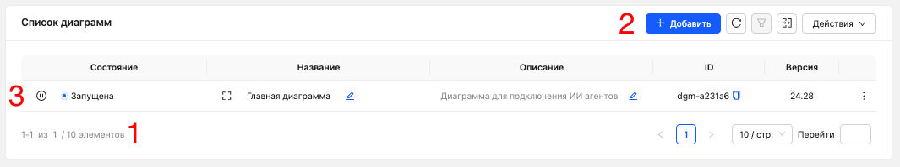
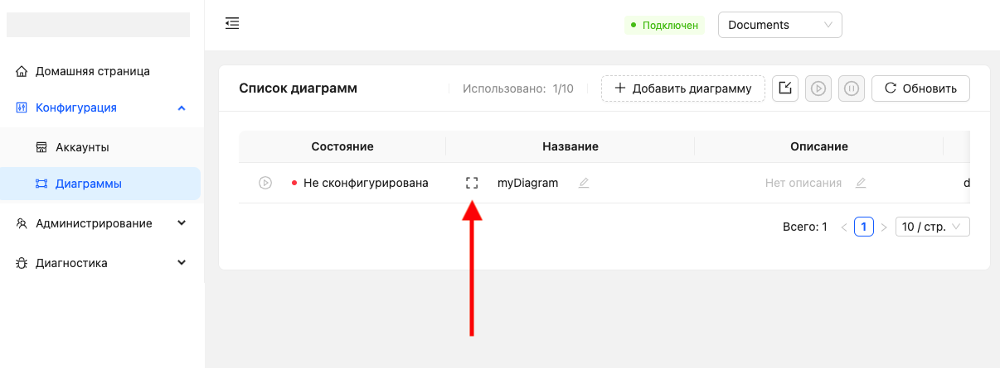
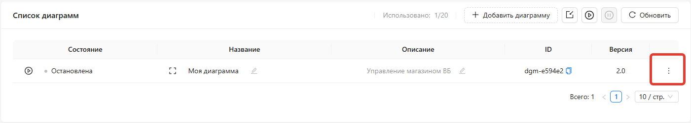

Диаграммы
Диаграмма - это визуальная схема автоматизации. На её холсте вы размещаете узлы и соединяете их между собой формируя необходимую логику работы.
Одна диаграмма - одна автоматизация. Например, диаграмма может описывать подключение вашего магазина Wildberries к MCP-серверу.
Все диаграммы хранятся в команде и доступны её участникам.
Управление
Для управления диаграммами откройте раздел Конфигурация → Диаграммы

(1) Количество созданных и доступных диаграмм
(2) Кнопка создания новой диаграммы
(3) Список созданных диаграмм
Создание диаграммы
- Перейдите в раздел Конфигурация → Диаграммы
- Нажмите кнопку + Добавить диаграмму
- Заполните поля
1. Название - обязательное поле. Укажите любое удобное название диаграммы.
2. Описание - необязательное поле. При необходимости добавьте описание диаграммы. - Нажмите Сохранить
После сохранения откроется пустое полотно диаграммы.
Подробнее о настройке диаграмм см. в разделе Настройка диаграмм.
Открытие диаграммы
- Перейдите в раздел Конфигурация → Диаграммы
- В строке с нужной диаграммой нажмите кнопку Открыть.

Подробнее о настройке диаграмм см. в разделе Настройка диаграмм.
Удаление диаграммы
- Перейдите в раздел Конфигурация → Диаграммы
- Напротив нужной диаграммы нажмите кнопку меню

- В открывшемся меню выберите Удалить
- Подтвердите удаление диаграммы
Запуск и остановка диаграммы
Диаграмма может находиться в одном из двух состояний.
Запущено - все процессы, настроенные на диаграмме, работают.
Остановлено - диаграмма доступна для редактирования, а связанные с ней процессы не выполняются.
После создания любая диаграмма находится в состоянии Остановлено до тех пор, пока не будет настроена и запущена вручную.
При изменении настроек диаграмма автоматически останавливается.
После завершения настройки её необходимо снова запустить.
Запустить диаграмму можно двумя способами: из общего списка диаграмм или из окна настройки диаграммы.
Из общего списка
1. Перейдите в раздел Конфигурация → Диаграммы
2. Напротив нужной диаграммы нажмите кнопку запуска (3)
Из окна настройки диаграммы
1. Перейдите в раздел Конфигурация → Диаграммы
2. Откройте нужную диаграмму
3. В окне настройки диаграммы нажмите кнопку запуска
Подробнее о настройке диаграмм см. в разделе Настройка диаграмм.